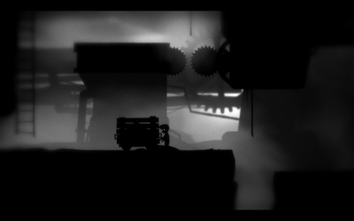
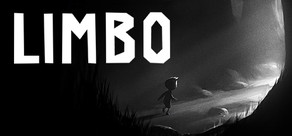

Limbo
Dieser Artikel wurde für die folgenden Ubuntu-Versionen getestet:
Ubuntu 14.04 Trusty Tahr
Zum Verständnis dieses Artikels sind folgende Seiten hilfreich:
In Limbo  sucht der Spieler als kleiner namenloser Junge seine Schwester, deren Schicksal ungewiss ist. Viel mehr erfährt der Spieler auch nicht und das Ende kann unterschiedlich interpretiert werden. Er muss Rätsel lösen und begegnet gelegentlich feindlich gesinnten Menschen oder Tieren, sowie anderen Gefahren wie Bärenfallen oder Elektrizität. Alles ist silhouettenhaft gezeichnet, sehr düster atmosphärisch und ein oft überraschender Tod mitunter recht grausam.
sucht der Spieler als kleiner namenloser Junge seine Schwester, deren Schicksal ungewiss ist. Viel mehr erfährt der Spieler auch nicht und das Ende kann unterschiedlich interpretiert werden. Er muss Rätsel lösen und begegnet gelegentlich feindlich gesinnten Menschen oder Tieren, sowie anderen Gefahren wie Bärenfallen oder Elektrizität. Alles ist silhouettenhaft gezeichnet, sehr düster atmosphärisch und ein oft überraschender Tod mitunter recht grausam.
Bei älteren Veröffentlichungen von Limbo, wie z.B. der Version aus dem Humble Indie Bundle V, handelt es sich nicht um ein Linuxprogramm. Das Paket enthält die Windowsversion inklusive einer eigenen Wine-Version. Bei neueren Versionen des Spiels, wie z.B. bei Steam angeboten, handelt es sich hingegen um ein natives Linuxprogramm.
|  |
| Spielszene |
| Spielszene |
Installation¶
Humble Store¶
Das Spiel ist im Humble Store käuflich zu erwerben und als .deb-Paket verfügbar. Nach erfolreicher Installation [1] kann das Spiel über "Anwendungen -> Spiele -> Limbo" gestartet werden [2].
Hinweis:
Sollte es Probleme geben, kann alternativ auch direkt die Windows-Version heruntergeladen und mit Wine installiert werden.
Software-Center (nur bis Ubuntu 13.04)¶
Bis einschließlich Ubuntu 13.04 kann man Limbo auch über das Software-Center käuflich erwerben. Dazu ist eine Registrierung bzw. ein Zugang über Ubuntu One erforderlich, welchen man sich aber auch während des Zahlungsprozesses über das Software-Center anlegen kann. Anschließend wird Limbo automatisch heruntergeladen und installiert. Für zukünftige Updates wird ebenfalls automatisch eine neue Paketquelle hinzugefügt. Das Programm kann dann sofort gestartet werden [2].
Bedienung¶
| Steuerung | |
| Taste(n) | Beschreibung |
| Esc | Menü / Pause |
| ↑ + ↓ + ← + → | Charakter bewegen |
| ↑ | Springen |
| Strg | Aktion |
Infobox¶
| Limbo | |
| Originaltitel: | Limbo |
| Genre: | Puzzle / Jump'n'Run |
| Sprache: | |
| Veröffentlichung: | 2010 |
| Publisher: | Microsoft Game Studios |
| Systemvoraussetzungen: | Prozessor: 2 GHz |
| Medien: | Download |
| Läuft mit: | Wine (ältere Version), nativ (neuere Version) |


- Erstellt mit Inyoka
-
 2004 – 2017 ubuntuusers.de • Einige Rechte vorbehalten
2004 – 2017 ubuntuusers.de • Einige Rechte vorbehalten
Lizenz • Kontakt • Datenschutz • Impressum • Serverstatus -
Serverhousing gespendet von